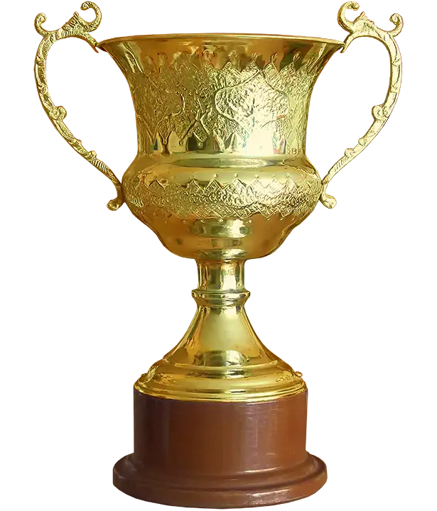

Asian Athletics Champion, Veteran and Renowned Iranian Coach in Athletics, Volleyball and Wrestling.
A lifetime devoted to athletics, coaching, and shaping champions across Iran.

Read more about Manouchehr Shamshiri's remarkable coaching career.
Read more →
From National Champion to Asia's Podium.
Read more →
Professional volleyball career.
Read more →
Achieving special honors in the field of wrestling.
Read more →This website is dedicated to Manouchehr Shamshiri, a distinguished athlete and coach whose achievements have left a lasting mark on Iranian sports. From his remarkable career in track and field to nurturing champions in wrestling and volleyball, he inspired generations of athletes.
This platform aims to preserve his legacy, celebrate his contributions, and share the story of a life devoted to excellence and mentorship.

From the historic city of Nishapur to the military academy — where a champion was born.
On May 10, 1942, in the ancient city of Nishapur, Khorasan province, a child was born who would one day carry the name of Iran to the podiums of Asia and the world.
Manouchehr Shamshiri grew up among the dust of history — in a city renowned for its poets, its scholars, and its legends. Yet his own legend would be written not in books, but on running tracks, wrestling mats, and volleyball courts.
After completing his early education and passing through the formative years of adolescence, he joined the Military Academy in Birjand, where discipline met destiny. It was within those walls that his athletic journey truly began — a journey that would redefine what one man could achieve in Iranian sport.
What started as a young cadet's passion soon became a lifelong devotion — to training, to competition, and ultimately, to shaping the champions who would follow in his footsteps.
Manouchehr Shamshiri represented Iran in the 1974 Asian Games held in Tehran, competing in the Decathlon and earning a bronze medal for the national athletics team.
Following the Games, he continued his success at the World Military Championships in Moscow, where he won the gold medal in the 110-meter hurdles.
Read more about Shamshiri's athletic achievements →